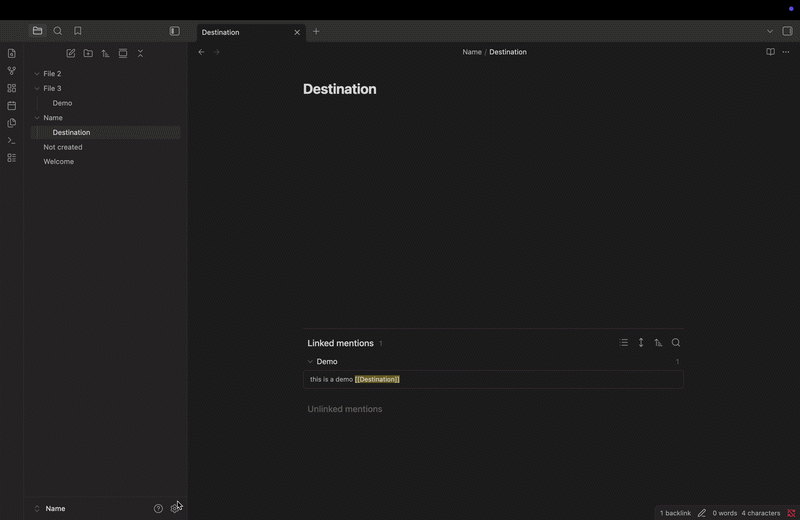
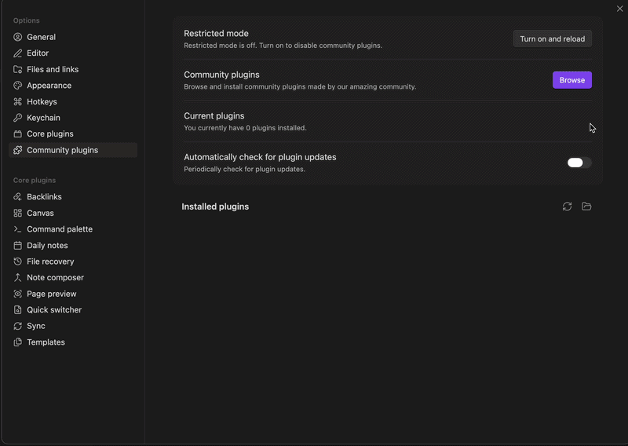
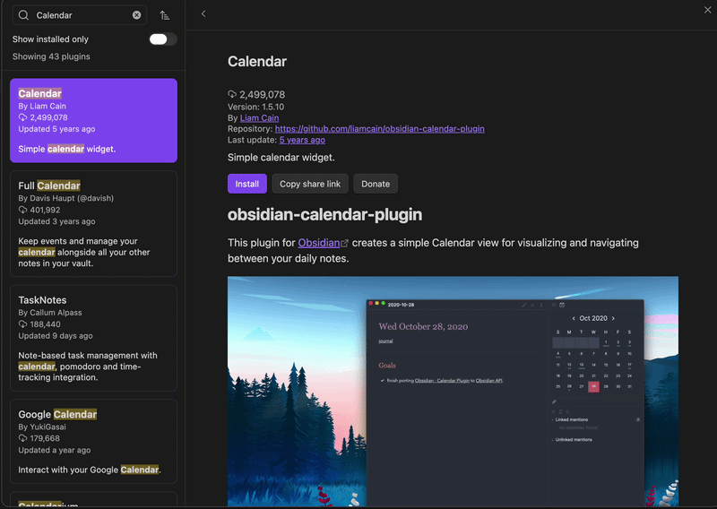
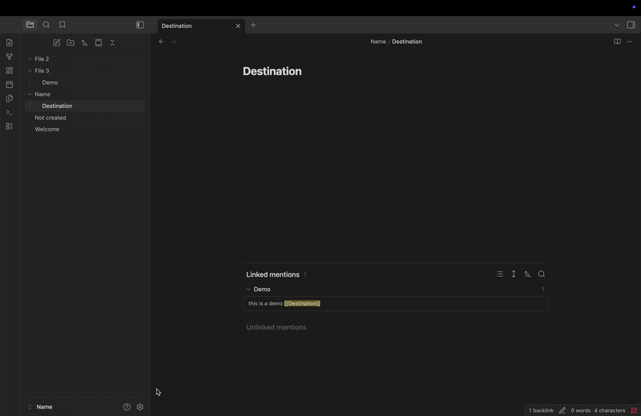
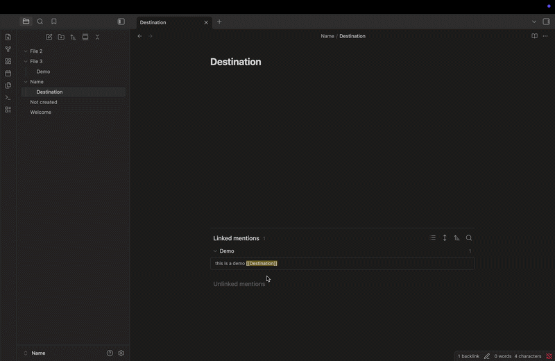
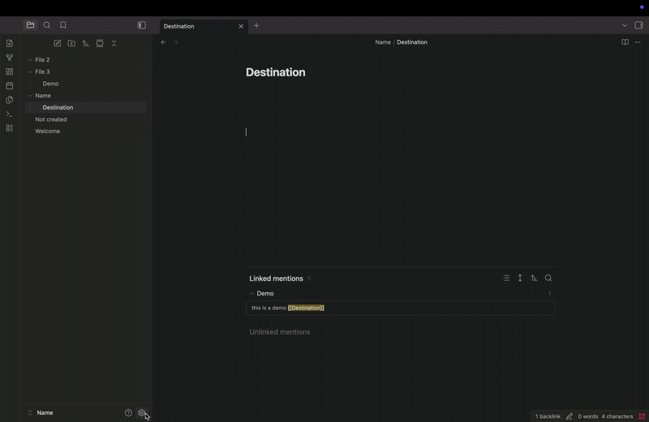
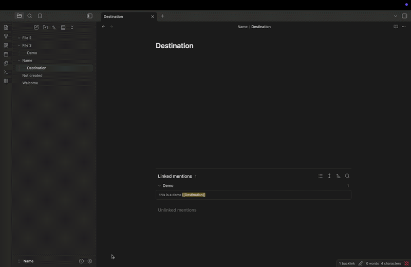
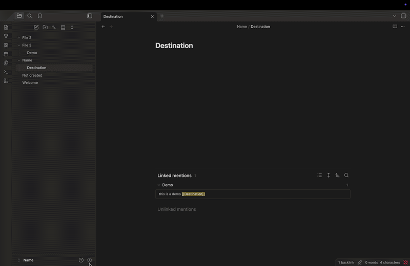
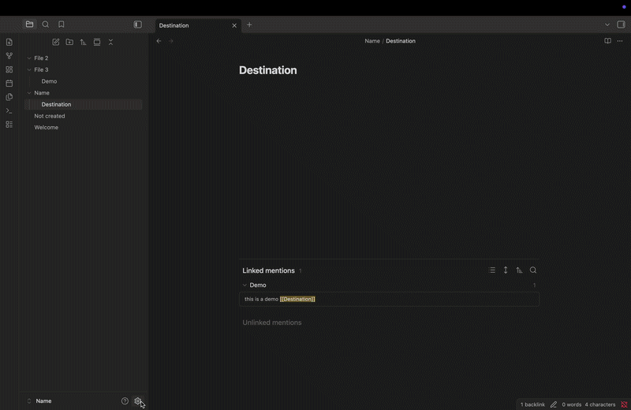

Task 4: How to Use and Add Plugins in Obsidian
One of the most powerful features in Obsidian is its plugin support. Plugins add extra features to your vault that you wouldn't normally have think of them as a customization option that you can tailor to fit your exact preference.
Enabling Community Plugins
- Go to Settings by clicking on the gear icon in the bottom left of your screen.
- Click on Community Plugins.
- Click Turn on Community Plugins.

Note
This option is turned off by default for new users.
Searching for a plugin
- Click on the Browse button while on the Community Plugins page.
- Search for the plugin you want to install.
- Click on the plugin and read its description.

Installing the plugin
Once you have found the plugin you want to download:
- Click Install on the plugin you want to install.
- Click Enable to activate it.

Warning
Make sure you enable it, otherwise the plugin won't run.
Configuring the plugin
- Go to Settings.
- Find the plugin name and adjust the settings to your preferences.

Using the plugin
Once you have set everything up, you can return to your notes and use the plugin.
- Press Cmd + P (Mac) or Ctrl + P (Windows) to open the Command Palette.
- Type the plugin name to see its available commands.

Keeping plugins Updated
- Go to Settings.
- Click on Community Plugins.
- Click on the Check for Updates button and update all.

Note
If it says no plugin updates were found, you are up to date.
Disabling or removing a plugin
- Go to Settings.
- Click on Community Plugins.
- Click on Show Installed Only.
- Click on the plugin you want to change.
- Click on Disable or Uninstall to remove it completely.

Using hotkeys with your plugin
- Go to Settings.
- Click on Hotkeys.
- Type in the plugin name to see all of its commands.
- Click the + button next to the command and press the key combination you want to bind it to.

Note
Once a hotkey is bound, pressing the key combination will automatically run the associated command.
Warning
You must include a ⌘, ⌥, or ⌃ at the start of the hotkey on Mac,or Ctrl, Alt, or Windows key on Windows, otherwise the hotkey won't work.
Supporting a plugin
- Go to Settings.
- Click on Community Plugins.
- Click on Browse and find the plugin you want to support.
- Click on the GitHub repository link.
- Click on the star icon to show your support.

Conclusion
Congratulations! You now have a solid understanding of how plugins work in Obsidian. From installing and configuring plugins to setting up custom hotkeys and keeping everything up to date. You now have the skills to fully customize the default workspace into your own personal workspace.